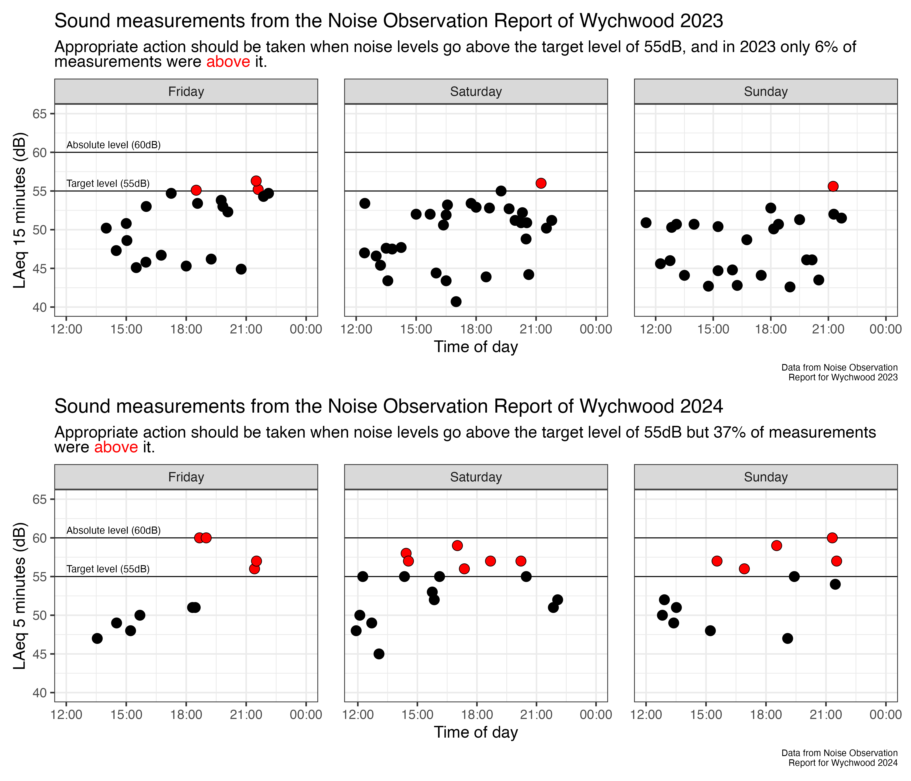

Outline
Wychwood festival is a family friendly music festival in Cheltenham at the racecourse. In 2024 the festival was a public nuisance for the residents of Park Lane, Shaw Green Lane (and Prestbury more generally). In 2024, Wychwood changed the position of the stages and since 2023 they are in the southeast corner of the helipad field - as close as could be to the houses on Park Lane and Bowbridge Lane.
There were 23 complaints made about the noise, but currently the festival plans to keep the stages in the same area of the field this year. However, I applied to the council for a review of the license and this was granted. Consequently, there is a current review of the license on public nuisance grounds. This is your opportunity to let the council know how the festival impacted you, for better or for worse.
The license review can be reviewed here. You can add your comments in the comments tab of that page.
TLDR
I just want the stages at Wychwood to be moved to the other end of the helifield, and the stages should face towards the northeast so that music goes out towards where there are mainly fields and an industrial estate.
Reasons for this post
- The application I wrote to the council to review the license is not publicly available, so I thought I would make it so here.
- The comments on the License portal (linked in the outline) are not - at the time of writing - available for everyone to read.
- I want an open discussion from residents about the impact of Wychwood last year. I want you to comment whether you loved or hated the noise, but this is your main chance to make your opinion known.
The application
The Wychwood festival in 2024 was a public nuisance for the residents of Park Lane, Shaw Green Lane (and Prestbury more generally). In 2024, Wychwood changed the position of the stages and since 2023 they are in the southeast corner of the helipad field - as close as could be to the houses on Park Lane and Bowbridge Lane. This resulted in a doubling of the noise level and led to sustained breaches of the terms of their license. The increased noise resulted in 23 complaints in 2024 that were mainly about the noise. The noise pollution from the event in Prestbury was extreme. We could feel vibrations inside our homes regularly throughout due to the low frequency noise and the music could easily be heard as far away as Pittville Park and even Springbank (approximately 3 miles away). Not only could we not enjoy time outside in the garden throughout the 3 days from the hours of midday all the way until 10:30pm when the music stopped, but we were also adversely affected by it inside our homes, even with all the doors and windows closed. The noise levels were too high and too sustained.
The conditions of the license should explicitly state the positioning of the stages to be as far away from residential areas (e.g. Park Lane and Shaw Green Lane, Prestbury) as possible, and for the direction of the stages to face away from these same areas. Moving the stages to be as far away from residents as possible is the simplest and most effective way of making sure Wychwood provide the best festival experience while minimising public nuisance and protecting public health. This change would also go some way to future proofing the festival in terms of public nuisance related to sound. Finally, a reduction in the absolute noise level from 60dB to 55dB would be more in line with the regulations upon which the license was designed and the Wychwood organiser’s own noise management plan. These differences in sound are large, as sound is measured on a log scale, the difference between 55dB and 60dB represents a tripling of the sound intensity.
In the license conditions for Wychwood the Public Nuisance heading states:
- The control limits set at the mixer position shall be adequate to ensure that a Target Music Noise Level (MNL) of 55dB LAeq (15mins) measured at one metre from the facade of noise sensitive premises shall be achieved between the hours of 0900 hrs to 2300 hrs. Where the Target Level of 55dB LAeq(15mins) is exceeded then suitable and appropriate action shall be taken to meet this Target Level. An Absolute Music Noise Level (MNL) Level of 60dB LAeq (15mins) measured at one metre from the facade of noise sensitive premises shall not be exceeded between the hours of 0900 hrs to 2300 hrs. The noise levels shall be monitored at noise sensitive locations agreed with the Council. (Note: MNL and noise sensitive properties are as defined in Code of Practice on Environmental Noise Control at Concerts Noise Council 1995)..
This wording is clear. If the noise goes above 55dB, you should bring it back down to 55dB. This Target Level is consistently referred to in the noise management plans as well. I was given the Noise Observation Reports taken by the Acoustic Consultants during the festival, which shows that in 2024 36% of all measurements were above the Target Music Noise Level, in clear breach of the license as it is written.

Moreover, there are many instances in the post event noise report where comments suggest changes to the sound system were made, but no change in the noise was observed. For example, on Friday at 18:40 the noise level was 60dB on Shaw Green Lane and “3d at 50hz taken out of both stages”. However, at 19:00 another measurement was taken on Shaw Green Lane and the measurement remained at 60dB. This is in clear breach of the license.
Environmental Health do not think this is a breach of the license. In an email, they wrote to me that “It is expected that at times the target level is surpassed, and often leeway is provided to allow for this to occur for certain performances.”. This would mean whole sets could breach the Target Music Level. However, this is not in the license. They also told me that the previous comment was “in relation to the departments application of such license conditions and is not taken from the license.”. You cannot simply interpret conditions in the license differently to how they are written.
The absolute level of 60dB for the current Wychwood license was set on guidance from the National Code of Practice on Environmental Noise Controls at Concerts. Table 1 of that document specifies guidelines for urban and rural venues based on the number of event days that happen per year. For all venues – if there are more than 4 concert days per calendar year, per venue, the guideline states:
The music noise levels should not exceed the background noise level by more than 15dB(A) over a 15-minute period.
In 2024 there were at least 7 concert days including Wychwood, Nile Rogers, and Summertime Live, at the racecourse on the helicopter fields. Consequently, the limits of Wychwood should be reduced as recommended by the guidelines upon which the original license was given.
The National Code of Practice also warns against relying solely on measurements of dB. Point 3.4 states:
Assessment of noise in terms of dB(A) is very convenient but it can underestimate the intrusiveness of low frequency noise. Furthermore, low frequency noise can be very noticeable indoors. Thus, even if the dB(A) guideline is being met, unreasonable disturbance may be occurring because of the low frequency noise. With certain types of events, therefore, it may be necessary to set an additional criterion in terms of low frequency noise, or apply additional control conditions.
As stated above, we felt vibrations in our house on Park Lane throughout the weekend due to this low frequency noise. We believe the easiest way to solve this is to move the stage much further away from the Park Lane end of the helicopter field.
Overall, Wychwood 2024 breached the terms of its license regularly, and modifications should be made to prevent public nuisance. Environmental Health are not applying the license as it is written, and this caused significant public nuisance in 2024 that should not be allowed to happen again. I do not want the festival to stop, I just want the stages to be moved to the other end of the helifield, and stages should face towards the northeast so that music goes out towards where there are mainly fields and an industrial estate.
I thank Amy MacArthur at Environmental Health for providing us with the noise Management Plan and Noise Observation Reports for Wychwood, and for answering all our questions patiently and punctually. We thank Jan Foster for helping answer some of our further questions. I am doing this to protect the health of my partner Sophia Galpin. If you would like to learn about how severely ill she is, and why this matters so much to me, you can read more about her here.